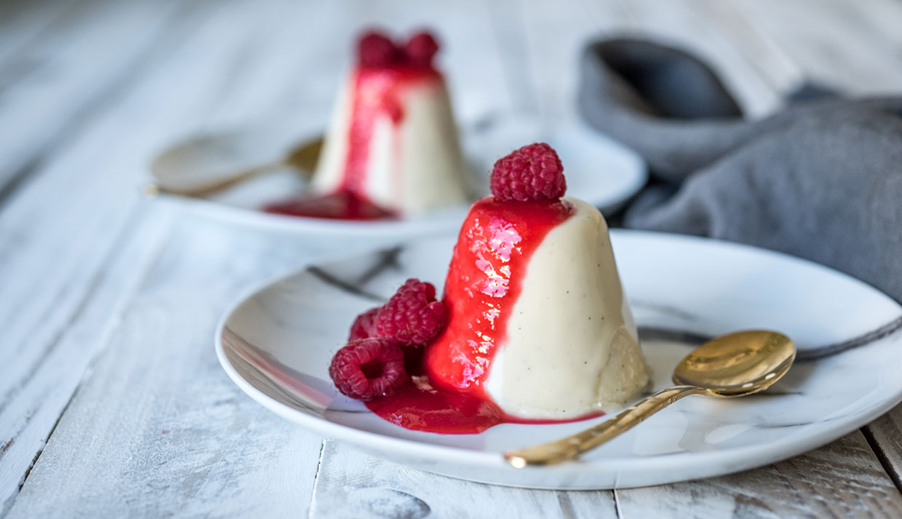

How to Make Rasberry Panna Cotta
Rich and creamy Panna Cotta! It’s an easy to make dessert that is undeniably delicious. Especially when it’s enhanced with a vibrant and gorgeously red, tempting, fresh raspberry sauce!

Ingredients:
You only need 7 basics ingredients!
- 3 Tbsp cold water
- 4 Tsp (12g) gelatin
- 3 cups heavy cream
- 1 cup whole milk
- 1/2 cup (100g) granulated sugar
- Pinch salt
- 2 Tsp vanilla extract
How to Make Panna Cotta
- Bloom gelatin: Pour water into a bowl, add gelatin all at once and mix right away. Let rest at least 5 minutes.
- Prepare ice bath: Pour water into a bowl, add gelatin all at once and mix right away. Let rest at least 5 minutes.
- Simmer dairy, sugar and salt: Meanwhile in a large saucepan bring heavy cream, milk, sugar and salt to a simmer stirring frequently to dissolve sugar, remove from heat.
- Melt gelatin, pour into dairy mixture: Immediately following heat gelatin mixture in the microwave for 10 seconds to melt mixture to liquid form and then right away pour into cream mixture and whisk for 30 seconds.
- Cool in ice bath: Set saucepan over ice bath and stir with a spoon until it’s cool to the touch. Stir in vanilla.
- Pour into individual cupsDivide mixture among 8 (6 oz.) ramekins (or use wine glasses/dessert cups), adding slightly over 1/2 cup to each.
- Chill until set: Cover with plastic wrap and refrigerate until set, at least 4 hours.